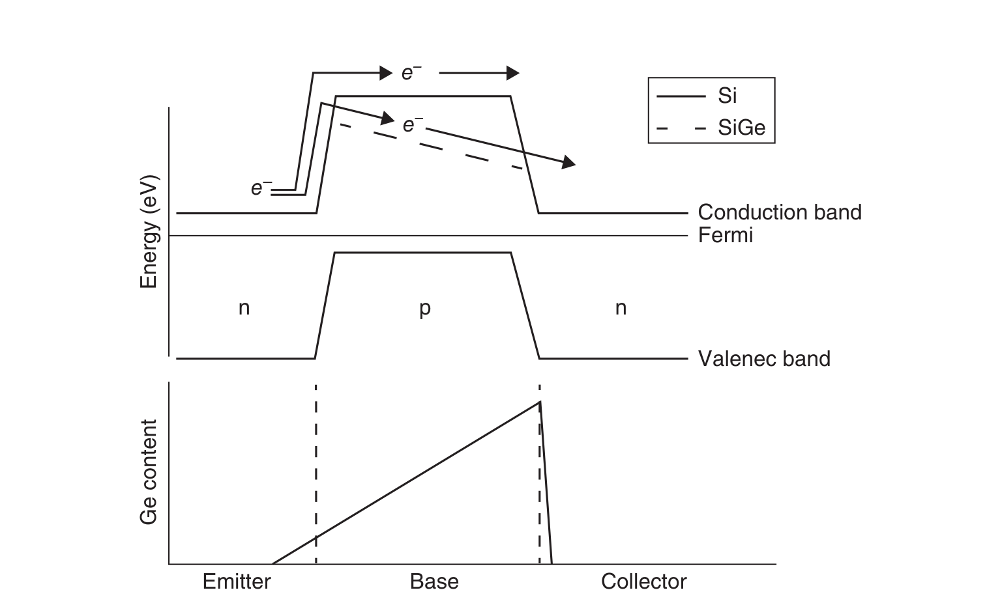
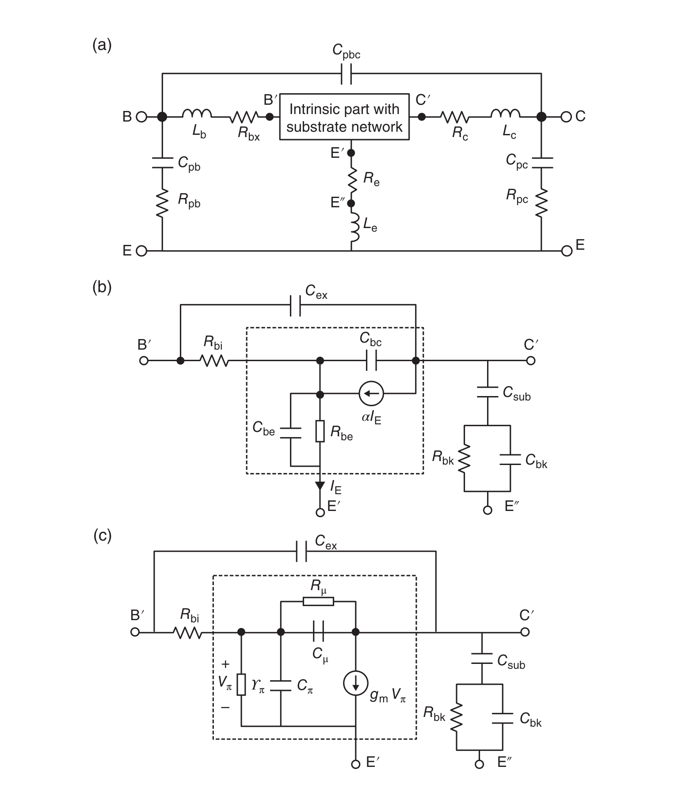
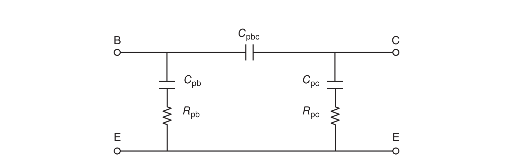
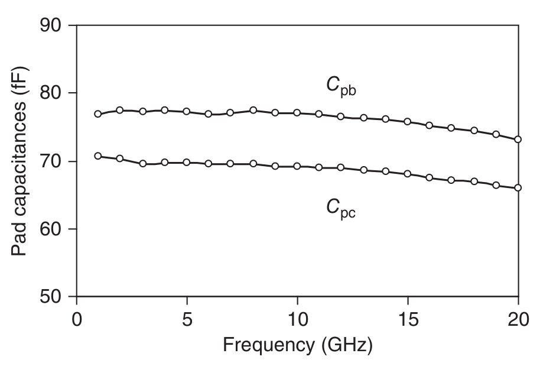
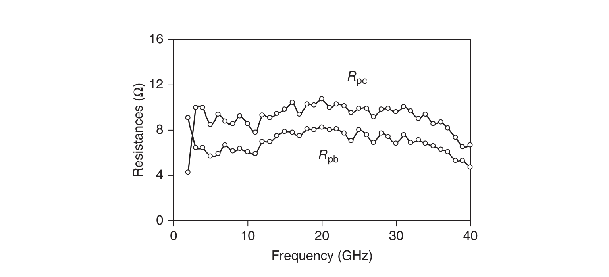
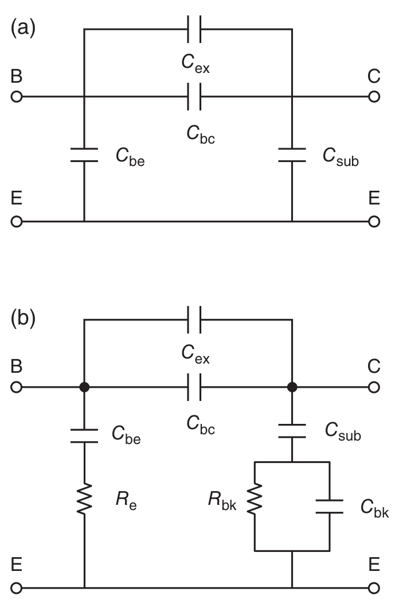
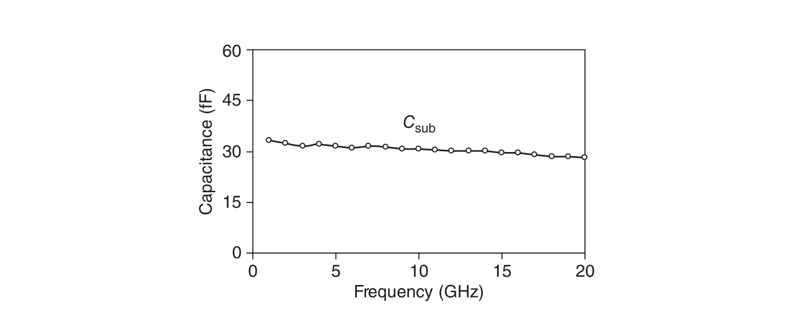
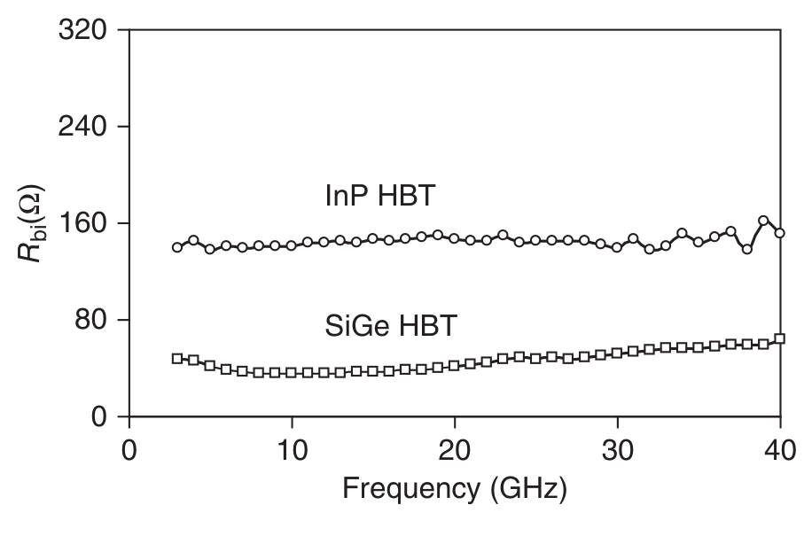
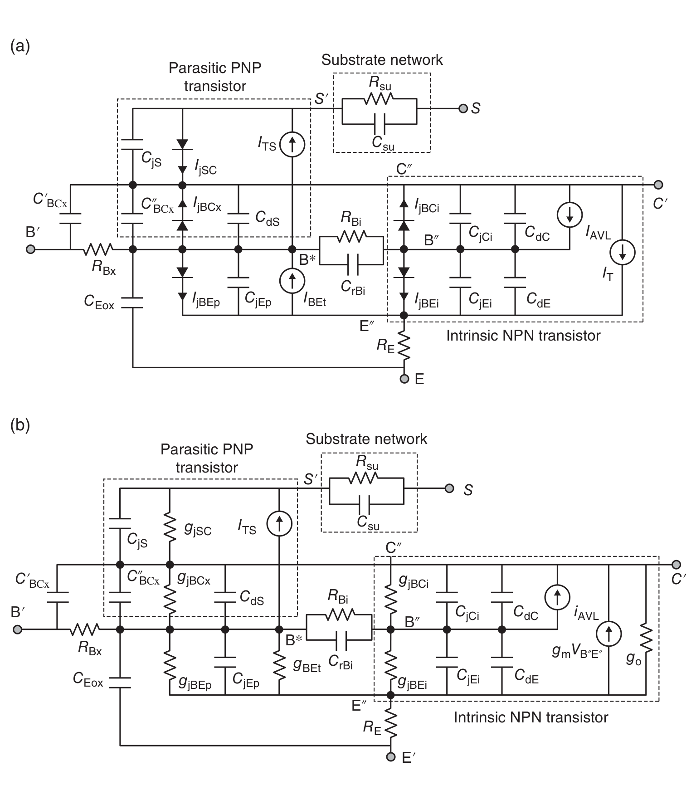
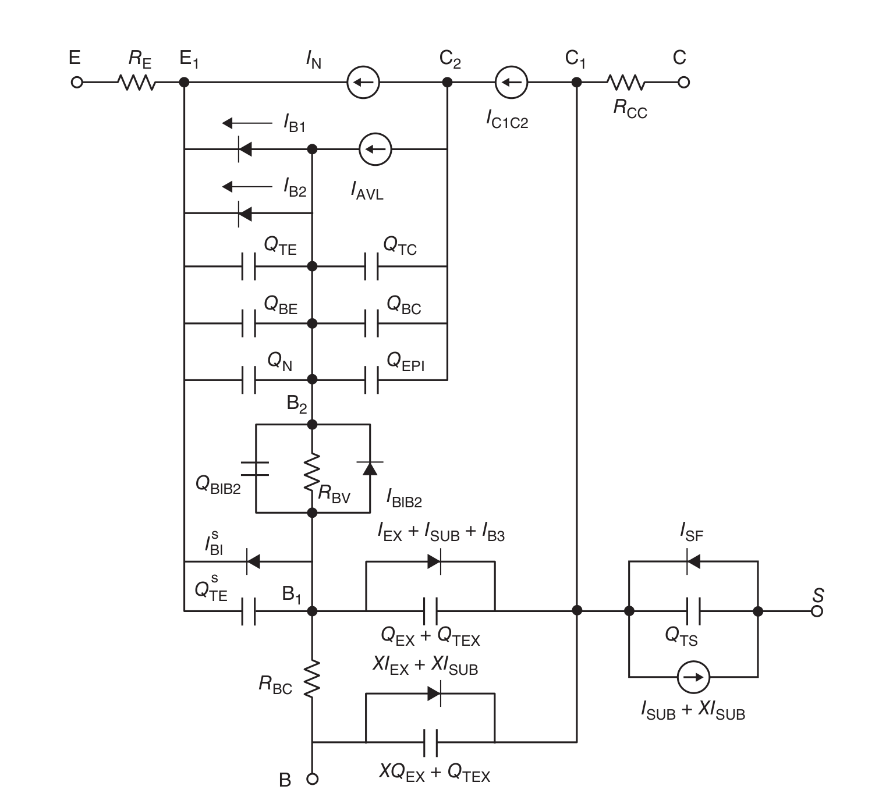

许多III–V族化合物半导体（如GaAs或InP）具有更高的载流子迁移率和饱和速度。然而，仍有一些重大问题需要在未来加以应对：基于III–V族化合物半导体的晶圆尺寸更小、缺陷密度更高、更易碎裂、导热性更差等。这意味着集成度更低、制造更困难、良率更低，最终成本更高。硅则具有优异的热特性，能够有效耗散所产生的热量，并具有良好的机械强度，便于加工与制造。
在常规硅双极晶体管中，采用应变且组分渐变的硅锗（SiGe）作为基区层，由于渐变带隙在基区内建立起准电场，载流子穿越基区的渡越时间显著缩短。此外，基区带隙的减小大幅提高了发射极注入效率，从而允许更高的基区掺杂浓度，并在不发生穿通的前提下实现更窄的基区宽度，进一步降低基区渡越时间。因此，SiGe HBT 实现了与GaAs技术相当的射频性能，而其制造成本与可靠性却与硅工艺相近。
SiGe异质结双极晶体管是最早投入实用的带隙工程化硅器件。凭借其高速性能与成熟的硅工艺，SiGe HBT已成为高速电路的首选技术[1, 2]；与CMOS工艺的集成更使其性能获益良多。
SiGe技术与现有硅CMOS工艺的兼容性，为未来的高频混合信号电路提供了强有力的组合。

图8.1给出了渐变基区SiGe HBT与Si BJT的能带图对比[3]。如图8.1中虚线所示，锗（Ge）的组分从发射结一侧的低浓度渐变到集电结一侧的高浓度。Ge的引入降低了载流子由发射区注入基区的势垒，并在基区内建立起加速电场。Ge的渐变加快了电子穿越器件的输运，从而实现更高的工作频率。此外，Ge渐变还通过调制基区内的本征载流子浓度，改善了器件的厄利电压（输出电流随输出电压变化的平坦度）。
图8.2给出了正向有源区工作状态下SiGe HBT的小信号等效电路。该模型以著名的混合π型等效电路为基础，并附加一个三元件衬底网络。衬底损耗引起的焊盘寄生，由电容 Cpb、Cpc 分别与电阻 Rpb、Rpc 串联来建模[4–7]。为了计及SiGe HBT集电极—体区下方有耗硅阱/衬底区域的影响，需要在集电极与有耗衬底之间引入耦合网络，该网络由集电极—衬底电容 Csub 与并联RC支路（Rbk 与 Cbk）串联构成。在直流衬底偏置下，从小信号的观点看发射极与衬底均接地，因此该耦合网络连接在集电极与发射极之间。

衬底损耗引起的焊盘寄生，可通过测量仅包含焊盘的开路结构来确定。开路测试结构的测量结果可建模为并联RC构成的π型网络。图8.3给出了开路测试结构的等效电路模型。焊盘寄生参数可由下列各式确定：

其中上标 o 表示开路测试结构，ω 为角频率。图8.4与图8.5分别给出了提取得到的焊盘电容与衬底损耗电阻。可以看到，在很宽的频率范围内这些参数基本保持恒定；同时可以发现，其焊盘电容比III–V族HBT更大。


集电极—衬底电容 Csub 可由截止偏置条件下的S参数测量确定。HBT的截止偏置条件定义为两个结均为零偏（或反偏）的工作状态。在此条件下直流电流为零，因而电流增益极小，器件表现得如同一个无源元件。因此等效电路可大幅简化，如图8.6所示。在低频下，Csub 可按下式确定。图8.7给出了提取的集电极—衬底电容 Csub 随频率的变化：


体电阻 Rbk 与电容 Cbk 可采用半解析方法确定。一旦寄生元件已知，本征模型参数即可用直接提取法确定。图8.8比较了发射极面积 5 × 5 μm2 的InP HBT与发射极面积 0.2 × 5.9 μm2 的SiGe HBT在正向有源区工作条件下（IB = 20 μA，VCE = 1 V）的本征基极电阻 Rbi；可以看出，SiGe HBT的 Rbi 小得多。因此，SiGe HBT的射频噪声性能优于InP HBT。

混合T型等效电路比混合π型模型更为常用，因为T型模型与器件物理直接对应。然而混合π型模型更为重要，因为目前最流行的商用电路仿真器所采用的紧凑模型——如SGP、VBIC、MEXTRAM和HICUM——都是基于混合π型拓扑的。
HICUM这一名称源自"高电流模型"（high current model）[8, 9]，表明HICUM最初是为重点建模高电流密度下的工作区而开发的，这对某些高速应用非常重要。HICUM是一种半物理的紧凑型双极晶体管模型，这意味着部分模型参数可由一组与工艺相关的电学和工艺数据计算得到。HICUM的重要特性如下：
1. 已计入大注入效应。共射电流增益 β 在大电流下下降，是因为基极—集电极耗尽区中的电子浓度变得可与背景掺杂离子浓度相比拟。
2. 通过随偏置变化的内部基极电阻计入了发射极电流集边效应。由于发射极边缘与中心之间的基区存在横向压降，边缘处注入的电子多于中心，导致发射极电流向边缘聚集。
3. 对外部基极—集电极区采用分布式高频模型。
4. 计入温度依赖性与自热效应。
图8.9a给出了HICUM大信号等效电路模型（NPN型）。该模型包含一个本征NPN双极晶体管模型、一个寄生PNP双极晶体管模型以及衬底网络。图8.9a中集总元件与电流源的物理含义如下：
IT：本征NPN晶体管的集电极—发射极电流
IAVL：反偏集电极—基极结处的雪崩倍增电流
IjBEi：本征基极—发射极结电流
IjBEp：非本征基极—发射极结电流
IjBCi：本征基极—集电极结电流
IjBCx：非本征基极—集电极结电流
IBEt：基极—发射极隧穿电流
ITS：非本征PNP晶体管的传输电流
IjSC：非本征集电极—衬底电流
CjS：非本征集电极—衬底耗尽电容
CdS：寄生衬底晶体管的扩散电容
CjEp：周边基极—发射极零偏耗尽电容
CdE：本征基极—发射极结扩散电容
CdC：本征基极—集电极结扩散电容
CjEi：本征NPN晶体管的基极—发射极电容
CjCi：本征NPN晶体管的基极—集电极电容
C′BCx 与 C″BCx：非本征基极—集电极分布电容
Rsu：衬底串联电阻
Csu：并联电容（由衬底介电常数引起）
CrBi：电流集边电容

图8.9b给出了HICUM小信号等效电路模型，其中大信号与小信号模型参数之间的关系由下列各式给出：
其中 gjBEi 为本征基极—发射极结动态电导，gjBCi 为本征基极—集电极结动态电导，gjBCx 为非本征基极—集电极结动态电导，gjBEp 为非本征基极—发射极结动态电导，gjSC 为非本征集电极—衬底动态电导，gm 为跨导，go 为输出电导。
MEXTRAM（most exquisite transistor model，最精巧的晶体管模型）是纵向双极晶体管的紧凑模型，适用于数字与模拟电路设计，并已在大量应用中证明了其精度。相应的大信号等效电路模型如图8.10所示[10]。其中各量的含义如下：
IN：集电极—发射极电流
IC1C2：流经外延层的电流
IAVL：反偏集电极—基极结处的雪崩倍增电流
IB1：理想基极—发射极电流
IB2：非理想基极—发射极电流
IB3：理想基极—集电极反向电流
IEX：非理想基极—集电极反向电流
XIEX：非理想基极—集电极反向电流所占比例
ISUB：衬底电流
XISUB：衬底电流所占比例
ISF：衬底失效电流
QTE：与基极—发射极扩散电容相关的电荷
QTC：与基极—集电极扩散电容相关的电荷
QBE：与基极—发射极结电容相关的电荷
QBC：与基极—集电极结电容相关的电荷
QEPI：集电极外延层中的电荷
QTS：与集电极—衬底电容相关的电荷

本章介绍了SiGe HBT的基本工作机理，阐述了其小信号建模与参数提取方法，特别是焊盘寄生的确定方法，并讨论了HICUM与MEXTRAM等常用的大信号等效电路模型。